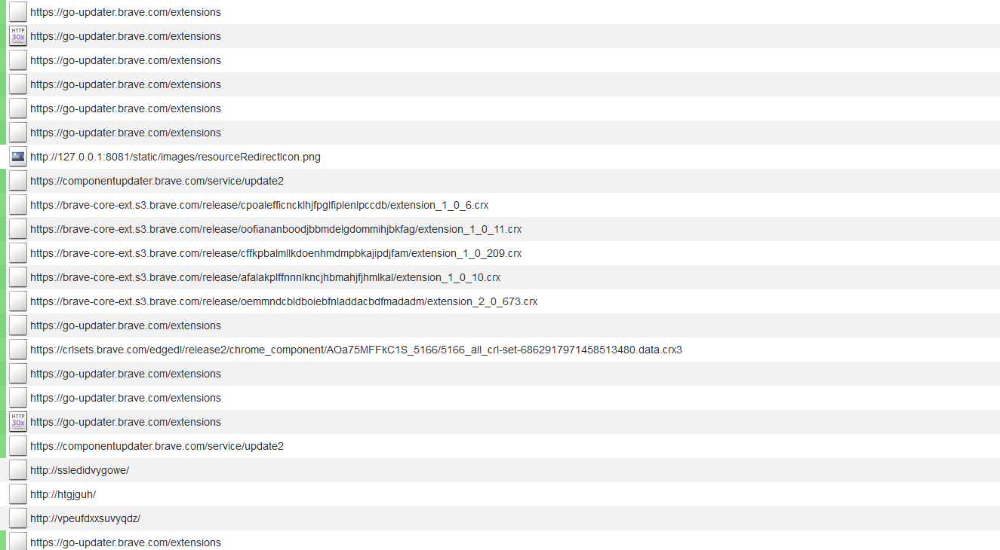
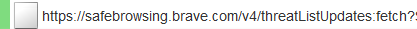
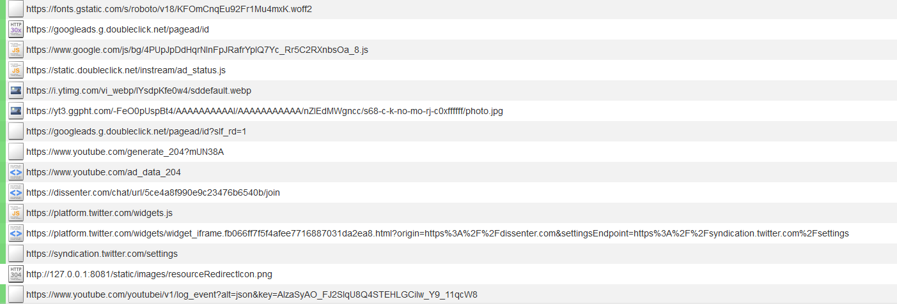

Dissenter
Dissenter é um navegador web e plugin lançado pela empresa de rede social Gab.
Nível de Spyware: Alto
O navegador Dissenter é um fork do navegador Brave. Ele faz ligações com o Brave para atualizações automáticas e navegação segura, que é hospedada pelo Brave. O mecanismo de pesquisa padrão é o DuckDuckGo. O navegador vem com duas extensões pré-instaladas. Uma extensão, "Shields", bloqueia certos scripts de propaganda. O outro "Dissenter", permite acessar a rede social Dissenter. Essa extensão faz ligações para vários lugares sempre que você o abre, incluindo Google e Twitter. A rede social Dissenter também deve, inerentemente, coletar mais informações sobre os hábitos de navegação do usuário do que as alternativas atuais que já existem. Também não ajuda que sua política de privacidade esteja basicamente vazia.
Ligando para casa
Quando o navegador Dissenter é iniciado, ele fará várias conexões com os serviços de atualização automática do Brave:
De vez em quando, o navegador enviará uma requisição para a instância do Brave do serviço de navegação segura do Google:
Sempre que a extensão Dissenter for aberta, ele fará ligações para várias empresas:
Isso inclui:
- Doubleclick (Empresa de telemetria de propriedade da Google)
- FontAwesome
- Cloudflare
Isso acontece toda vez que a extensão é aberta.
Opção de Telemetria
O Dissenter enviará relatórios de falhas para o Gab automaticamente. Isso está ativado por padrão e você tem a opção de desativá-lo.
"Quando o Gab trava, ele cria um relatório que pode ser enviado a nós para nos ajudar a corrigir o que causou o problema. Este relatório contém informações técnicas sobre seu sistema de computador que são tipicamente distintas. Você pode escolher se deseja nos enviar esses relatórios. Mesmo que você tenha optado por enviar relatórios no passado, pode desativar relatórios futuros nas configurações. Os relatórios de falhas podem conter informações pessoais" [1].
Dissenter ignora seu próprio filtro rastreador
O Dissenter vem com seu próprio bloqueador de conteúdo chamado Shields, destinado a bloquear rastreadores enquanto você navega na web. Esse bloqueador de conteúdo pode bloquear solicitações feitas por sites comuns, mas não bloqueia o conteúdo carregado pela extensão Dissenter. A extensão Dissenter faz solicitações para rastreadores que seriam bloqueados por seu próprio filtro por seus próprios padrões. O Dissenter faz conexões com sites de rastreamento que não são necessários e não privados. O site de spyware googleads.g.doubleclick.net é bloqueado corretamente por Shields quando um site normal tenta acessá-lo, mas essa conexão não é bloqueada quando o Dissenter acessa... Este é um padrão duplo interessante quando se trata de privacidade.
Problemas particulares do Dissenter
Dissenter tem um problema em particular de associar as páginas web que você visitou com as discussões que você está tendo ou tentando ter. Se você quiser checar os comentários de um artigo no Dissenter, você tem que dizer ao Gab que você visitou aquele artigo. Isso dá ao Gab um perfil muito bom de quais sites você visita e quais artigos você lê. Atualmente, existem alternativas a este modelo que já estão em vigor. Por exemplo, você pode criar um tópico em um Imageboard, site semelhante ao Reddit ou outro formato de fórum da Web, que define um link arquivado para o artigo como tópico de discussão. Esse formato é muito mais privado porque as partes envolvidas têm muito menos informações sobre o que seus usuários fizeram. O site de notícias não tem ideia de quem leu o artigo, porque o tráfego foi para o serviço de arquivamento. O fórum que você pode comentar livremente também não sabe quais artigos você viu ou quais discussões você tentou ter. Se considerarmos apenas a privacidade, esse método é uma maneira um pouco melhor de atingir esse objetivo.